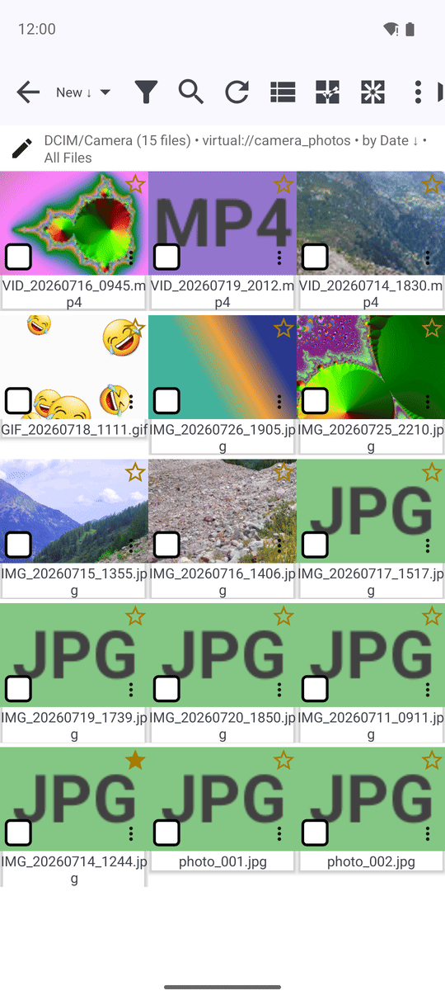
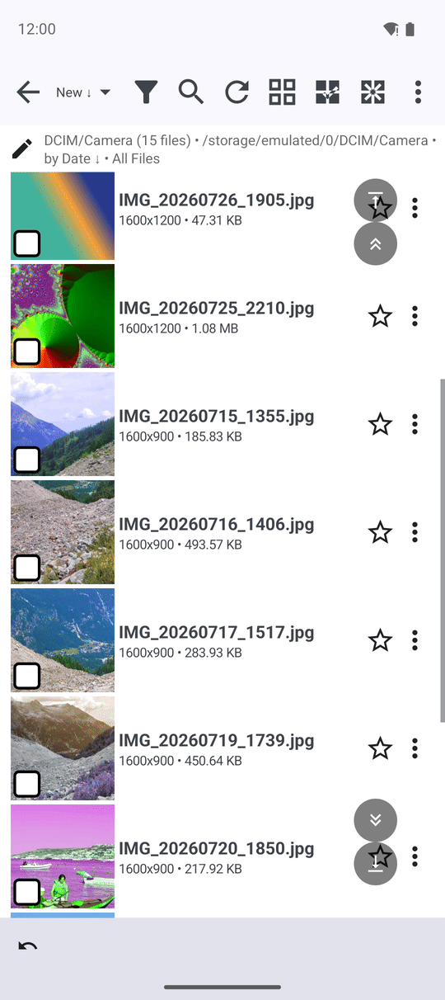
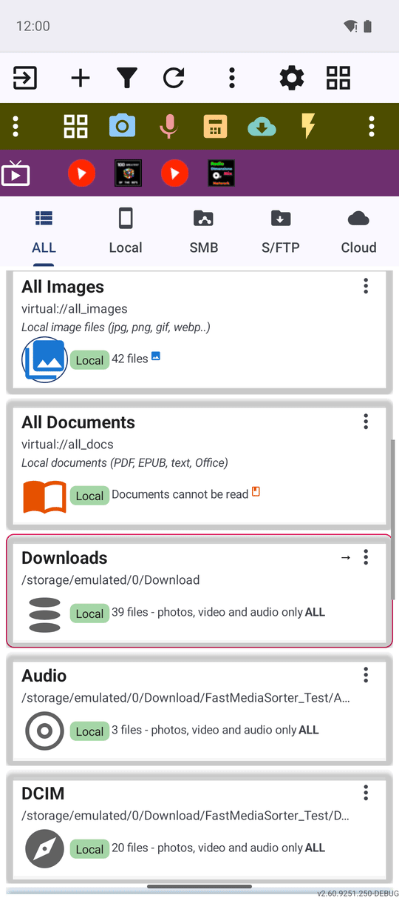

Кешування мініатюр та індексація
Браузер файлів завантажує мініатюри у фоні, запам'ятовує папку між відвідинами й оновлюється сам, коли файли на пристрої змінюються - тож папка відкривається швидко й лишається точною, навіть коли в ній тисячі файлів.
Чому вам це сподобається
Ніщо з цього - не екран, який ви відкриваєте навмисно. Це те, що відбувається саме перед появою папки: завантажується мініатюра, повертається збережений список замість повторного зчитування з нуля, нове фото з камери з'являється без дотику до кнопки оновлення. У застосунку немає параметра з назвою «кешування», але різницю ви відчуєте одразу, коли вперше відкриєте папку з двома тисячами фото і вона не зависне.
На цій сторінці нічого не потрібно налаштовувати. Вона пояснює, що браузер файлів уже робить за вас, тож мить завантаження - або рідкісний випадок, коли йому треба надолужити, - має сенс, а не виглядає як щось не так.
- ✓ FastMediaSorter у будь-якій редакції. Це фонова поведінка, а не функція, яку вмикають.
- ✓ Принаймні один ресурс із достатньою кількістю файлів, щоб помітити різницю - папка з кількома сотнями фото покаже її краще, ніж папка з п'ятьма.
Чому мініатюри з'являються майже миттєво
Кожен тип ресурсу - локальна папка, спільний ресурс SMB, хмарний акаунт, бібліотека PDF - завантажує свої мініатюри через власний завантажувач, побудований саме для цього джерела, тож мережева папка не чекає тих самих кроків, що й локальна. Мініатюри призупиняються, поки ви швидко гортаєте, тож проскакування довгого списку не змагається із завантажувачем за кожен кадр, який ви проминаєте, а папка з величезною кількістю файлів автоматично вимикає завантаження мініатюр, замість того щоб застрягати.
Після завершення звичайної синхронізації мережевого ресурсу фонове завдання тихо завантажує мініатюри для щойно закешованих файлів через Wi-Fi, пропускаючи все вже завантажене - тож коли ви відкриєте цей ресурс наступного разу, готового до перегляду буде більше, ніж востаннє.

Повторне відкриття папки миттєве другого разу
Коли це увімкнено для ресурсу, відсканований список файлів зберігається після першого перегляду, тож повторне відкриття цього ресурсу одразу відновлює список замість сканування папки з нуля. Це найбільше помітно на повільному мережевому ресурсі чи в папці з тисячами файлів, де раніше саме повне повторне сканування змушувало чекати.
Список оновлюється сам, коли файли змінюються
Для локального ресурсу застосунок легко стежить за папкою на диску. Коли там щось змінюється - файл перейменовано поза застосунком, з'явився новий, - список тихо оновлюється на місці або перезавантажується, якщо зміна завелика, щоб її залатати, без дотику до кнопки оновлення.
Другий спостерігач стежить саме за власною медіаколекцією пристрою, тож фото, яке щойно зберегла камера, само з'являється у відповідному ресурсі.
Великі папки відкриваються сторінками, а прокручування лишається плавним
Папка із сотнями файлів завантажується частинами, а не одразу вся, тож її відкриття не викликає стрибка пам'яті телефону. Прокручування великої папки із зображеннями більше не читає файли з диска в тому самому потоці, що малює екран, а це раніше було поширеною причиною короткого зависання застосунку під час прокручування.
Ресурс спареного телефону на годиннику гортається так само сторінками: після перших 50 елементів кнопка Показати ще запитує в телефона наступну сторінку замість спроби отримати все одразу.

Пошкоджені та анімовані мініатюри обробляються акуратно
Файл, який справді порожній, нуль байтів, розпізнається ще до спроби його декодування: папка одразу показує звичайну піктограму типу файлу й запам'ятовує, що пробувати знову не варто, замість запиту мініатюри при кожному повторному прокручуванні. Анімовані файли WebP і APNG, які раніше показували піктограму пошкодженого файлу, тепер натомість показують нерухоме зображення першого кадру - у списку файлів, у прев'ю папок лаунчера й на панелі відомостей про файл.
Кількість файлів і статистика папки лишаються точними
Кількість файлів ресурсу, кількість підпапок і час останнього відкриття чи синхронізації записуються щоразу, коли ви його переглядаєте, і більше не скидаються до нуля - чи до нічого - лише через вихід з екрана чи відкриття файлу. Хмарний ресурс так само записує час останньої синхронізації. Дивіться рецепт Навігація головним екраном, де саме ці цифри показані на картці ресурсу.

Вбудовані колекції лишаються стабільними під час копіювання чи переміщення
Колекції на кшталт «Усі зображення» чи «Останні медіа» збираються на льоту, а не вказують на одну папку, і раніше це змушувало їх перезавантажуватися чи на мить блимати порожнечею, поки у фоні тривало копіювання чи переміщення. Тепер вони лишаються завантаженими й стабільними протягом передачі замість того, щоб блимати.
Фокус клавіатури лишається видимим, коли ви вибираєте рядок
Переміщення списком файлів клавіатурою, D-pad або мишею малює кільце фокуса навколо поточного рядка. Вибір цього рядка - позначення його прапорця - раніше змушував кільце зникати, бо вибір і фокус ділили те саме виділення; тепер вони малюються окремо, тож завжди видно і який рядок вибрано, і на якому лежить фокус. Докладніше про клавіатуру й пульт: Навігація клавіатурою, D-pad і на ТВ.
Ваші позначки й налаштування переживають оновлення застосунку
Кілька дрібниць раніше могли скидатися, коли застосунок оновлював себе у фоні: чи файл був позначений прихованим або лише для читання, до якого типу файлу чи завдання передачі належав закешований запис, і чи щойно завершене копіювання або переміщення було позначено виконаним. Тепер усі три переживають оновлення без змін - а якщо запис із часів до оновлення виявляється нечитабельним, його тихо відкидають, замість того щоб застосунок спотикався.
Що ви отримаєте
Папки відкриваються швидко і лишаються швидкими: мініатюри завантажуються у фоні, уже відскановану папку відкрито миттєво, список сам лишається чесним, коли файли на пристрої змінюються, а навіть дуже велика папка гортається плавно. Ваше обране, позначки прихованих файлів і статистика ресурсів переживають оновлення застосунку без змін.
Поради та усунення несправностей
- Папка здається повільнішою за звичайну одразу після додавання багатьох файлів? Фонове попереднє завантаження мініатюр працює лише через Wi-Fi і лише після завершення звичайної синхронізації ресурсу - дайте йому трохи часу.
- Хочете керувати тим, що показує список, а не лише швидкістю завантаження? Дивіться рецепт Сортування, фільтрація та швидкий пошук.